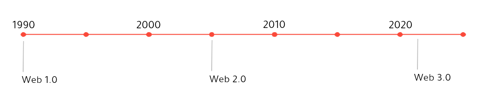
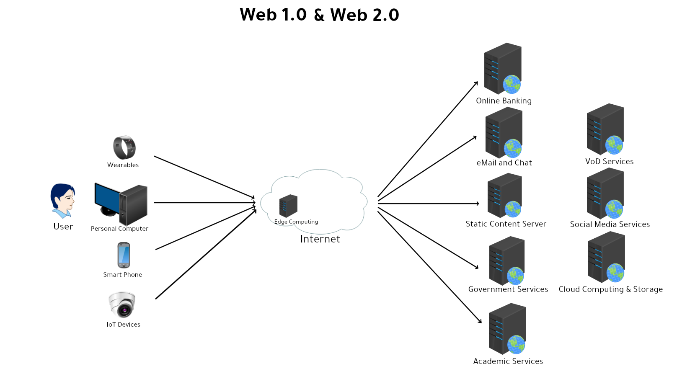
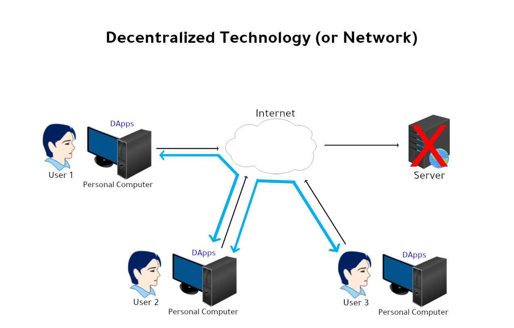

Internet Web 3.0
Internet technology is one of the key inventions from the 20th century. It was introduced in the year 1990 and it evolved into 3 generations.
Web 1.0 is the period between 1990 and 2005. Web 2.0 started in 2005 and continuing till date. Web 3.0 starts now with the new technology called Decentralized Applications.

Web 1.0
In initial period of web 1.0, Internet was used to host Static file contents in the form of HTML files. Mainly used for hosting documentation and blog. User can use a personal computer to access the webserver using the browser application. Netscafe Navigator and Internet Explorer are the browsers used at that period.
Along with static services, an user interactive dynamic services was also introduced later in mid 90s over Internet. For example eMail and chat services was introduced by Yahoo, Hotmail, AOL. Government was started providing online services for their citizens. Major banks was also started providing online banking services, in which user can view transactions and make online money transfer by just sitting in front of a Personal computer. Academic institutes was started providing registration services for academic courses over Internet.
Web 2.0
During Web 2.0 period, lot of new user equipments has been launched with Internet accessing capability. For example
Smart phones was launched, by which user can access the Internet services on-the-go. And thanks to evolution on Telecom services during this period, by which 3G and 4G launched all over the world. Which gives better Internet services for the users who are in transit.

Next a wearables got introduced, which is more than a wrist watch. It can track our health conditions like heart rate, O2 levels and our physical activities and update to the connected smartphone. And lot of Smartphone apps can push short notifications and information to it. Some of the wearables can accept SIM card as well by which we can make calls.
IoT Device got launched, lot of home devices like Camera, Washing machine, refrigerator, light can connect to the Internet via Home wifi, by which user can control or monitor these devices far away from home. Even in Industries also IoT devices started getting used to track and control manufacturing units with less Human resources.
These are the changes happened on the front end side. Lot of new services gets introduced in back end as well. For example
Social media services gets introduced like Facebook, Insta, Whatsapp, Youtube, Telegram. By which users were able to communicate with peoples around the globe.
Video On Demand services like Netflix, Amazon Prime etc started in this period, by which user can stream Video content to their devices.
Computing and Storage resources has been provided as service from Internet by big players like Google, AWS, Azure. By which user can easily access computing resources and pay as they use. With the help of this cloud resources, Internet based Business service providers (like cab hailing service, delivery service) can start their business by using Cloud resources initialy, without investing heavily on the On-premise data centers.
Another interesting changes in this period is Edge computing, which are very similar to Cloud servers, but sits close to the user on the ISP premise, to serve the user request with much lesser latency. Lot of VoD and social media services, has leveraged these edge technology to provide better Quality of service.
Web 3.0
In web 3.0 era, Decentralization technology is going to be used to build services for user without any trusted entity.
All the Internet services so far we have seen in Web 1.0 and Web 2.0 are provided by a server from a public or private organization. These services are centralized applications. If tomorrow any one of those organization decides to stop the service, then it is a huge setback for users. That is the important problem in Centralized applications in Internet.

In decentralized technology each user forms a network, for communication or data operation, in which there is no governing entity. Each user validates all other’s operation or communication. And each user holds the complete set of data, so no need of a Centralized data center to store data or computation. So this decetranlized technology is going to remove centralized server, which is getting deployed and operated by a single party.
Application runs on Decentralized technology is called DApps (Decentralized Applications). It runs on network of computers using peer-to-peer technology, instead of running on a single server. It uses a Smart Contracts to complete the transaction between two entity without the need for third party.
Advantages of DApps
-
No need of a trusted third party for authenticating the desired operation. Each user gets a copy of the complete data in the form of a distributed ledger, and it can be verified with less computing power. If a user modified the ledger, it will not get accepted by all the other users in the network.
-
There is no single entity who handles all the task. Because of this there is no single point of failure. In centralized application, there is a high chance of no service or poor service incase of failure or exhaustion on the server. Even recently facebook and youtube was not accessible for certain duration due to technical glitch.
Disadvantages of DApps
-
First disadvantage is limitation on scaling. If the data becomes much larger it would be hard for all nodes to store and process it. So scaling would be challenging.
-
After deployment, Software code of DApps will be hard to modify for bug fixes.
Conclusion
Internet technologies is the back bone of rapid evolution of Human life in the last three decade. With the new addition of Decentralized Technology to Internet is going to make an another rapid evolution to Human life.
Your Ad Here